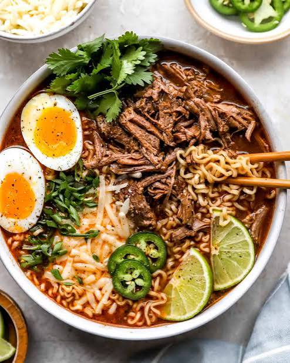

Birria Ramen

Description
Level up your ramen with this flavorful and yummy birria ramen recipe.
This is a perfect meal for when you want to indulge in something different and can be customized with your favorite toppings.
Ingredients
- 1 batch of beef birria
- 4-6 cups of beef stock
- 4 packages ramen noodles 3 oz. each discard seasoning packets
- 1 cup shredded cheese
- 1 cup diced onions
- 1 cup diced tomatoes
- Salt and pepper to taste
Steps
- In a large pot, bring the birria broth to a boil.
- Add the ramen noodles and cook according to package instructions.
- Stir in the shredded beef, cheese, onions, and tomatoes. Heat gently until the cheese is melted and the soup is heated through.
- Season with salt and pepper to taste.
- Serve hot, topped with additional shredded beef and cheese if desired.
Back to Home